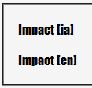

任意の要素に対してfont-familyプロパティで欧文フォントを指定する場合、その要素のlang属性を明示的に「ja」以外の値にしなければ欧文フォントの指定が無視されてしまう。
<p style="font-family:Impact, sans-serif;">Impact [ja]</p> <p style="font-family:Impact, sans-serif;" lang="en">Impact [en]</p>
Impact [ja]
Impact [en]
どちらもImpactフォントで表示させています。両者の違いはlang属性でja以外の値を明示しているか、そうでないかです。
WinIE6.0での表示（標準モード）
MacIE5で発生する模様。